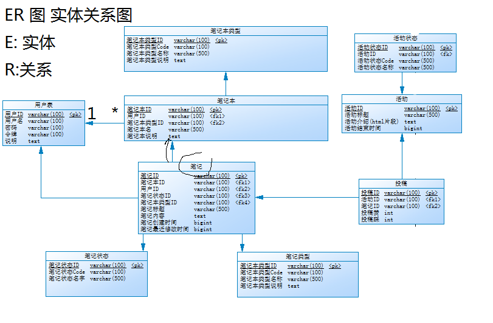
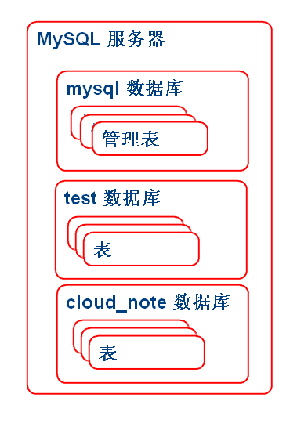
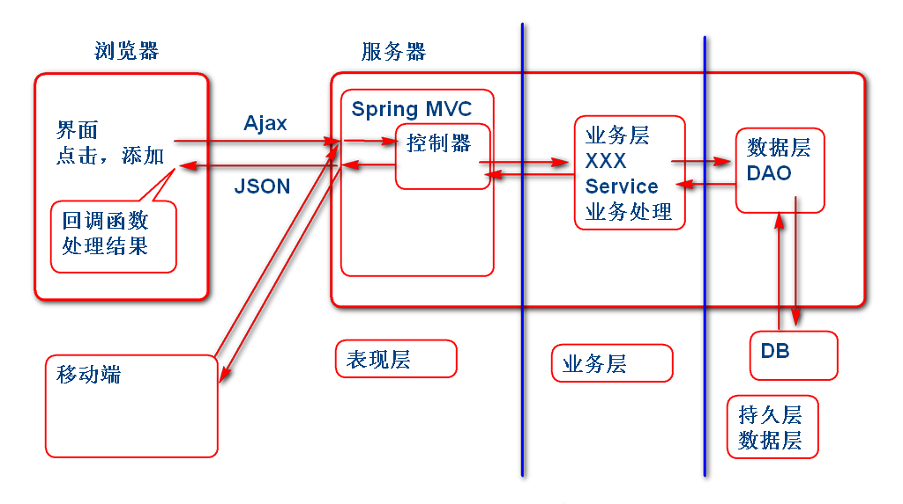

开发步骤
从客户获取详细的软件需求
一般数据结果设计过程称为：实体-关系设计。依据软件的需求设计合理的存储结果存储需求中软件数据。可以概要设计，在实现软件过程中再逐步细化。
在工作中可以使用图形化建模工具,如： PowerBuilder ER工具，实体关系建模工具
E-R设计结果：

ER图是利用"实体建模"工具绘制, 实体建模工具可以自动化的将 ER图 导出为 DDL SQL 语句
根据设计生成建表SQL。请参考 cloud_note.sql
使用MySQL作为数据库
连接到数据库，打开终端窗口：
mysql -uroot -p
其中 -uroot 表示使用 root 用户登录 -p 表示输入用户密码，Linux教学系统默认没有密码，如果是Windows系统，请使用安装时候输入的密码。
MySQL的结构

MySQL 常用命令
创建数据库：
create database 数据库名;
显示数据库列表：
show databases;
删除数据库：
drop database 数据库名;
切换（打开）当前数据库：
use 数据库名;
显示全部表：
show tables;
设置客户端的编码:
set names utf8;
执行sql脚本
source xxx.sql
将项目的sql脚本导入到数据库：
set names utf8;
create database cloud_note;
use cloud_note;
source /home/soft01/cloud_note.sql
注意：cloud_note.sql 的位置, 错误的话就不能执行了。
执行建表的SQL语句：
Windows:
source D:\tts9\note_ziliao\cloud_note.sql
Linux:
source /home/soft01/cloud_note.sql

需要组件
pom.xml:
<dependency>
<groupId>org.springframework</groupId>
<artifactId>spring-core</artifactId>
<version>3.2.8.RELEASE</version>
</dependency>
<dependency>
<groupId>org.springframework</groupId>
<artifactId>spring-webmvc</artifactId>
<version>3.2.8.RELEASE</version>
</dependency>
<dependency>
<groupId>org.mybatis</groupId>
<artifactId>mybatis</artifactId>
<version>3.2.8</version>
</dependency>
<dependency>
<groupId>org.mybatis</groupId>
<artifactId>mybatis-spring</artifactId>
<version>1.2.3</version>
</dependency>
<dependency>
<groupId>mysql</groupId>
<artifactId>mysql-connector-java</artifactId>
<version>5.1.24</version>
</dependency>
<dependency>
<groupId>commons-dbcp</groupId>
<artifactId>commons-dbcp</artifactId>
<version>1.4</version>
</dependency>
<dependency>
<groupId>com.fasterxml.jackson.core</groupId>
<artifactId>jackson-core</artifactId>
<version>2.2.3</version>
</dependency>
<dependency>
<groupId>com.fasterxml.jackson.core</groupId>
<artifactId>jackson-databind</artifactId>
<version>2.2.3</version>
</dependency>
<dependency>
<groupId>com.fasterxml.jackson.core</groupId>
<artifactId>jackson-annotations</artifactId>
<version>2.2.3</version>
</dependency>
<dependency>
<groupId>junit</groupId>
<artifactId>junit</artifactId>
<version>4.12</version>
</dependency>
<dependency>
<groupId>org.springframework</groupId>
<artifactId>spring-jdbc</artifactId>
<version>3.2.8.RELEASE</version>
</dependency>
web.xml
<servlet>
<servlet-name>mvc</servlet-name>
<servlet-class>
org.springframework.web.servlet.DispatcherServlet
</servlet-class>
<init-param>
<param-name>contextConfigLocation</param-name>
<param-value>classpath:spring-*.xml</param-value>
</init-param>
<load-on-startup>1</load-on-startup>
</servlet>
<servlet-mapping>
<servlet-name>mvc</servlet-name>
<url-pattern>*.do</url-pattern>
</servlet-mapping>
在 resource 文件夹中创建Spring配置文件 1. spring-mybatis.xml MyBatis 配置 2. spring-servcie.xml 业务层 配置 3. spring-web.xml Spring-MVC 配置
spring-mybatis.xml:
<?xml version="1.0" encoding="UTF-8"?>
<beans xmlns="http://www.springframework.org/schema/beans"
xmlns:xsi="http://www.w3.org/2001/XMLSchema-instance"
xmlns:context="http://www.springframework.org/schema/context"
xmlns:jdbc="http://www.springframework.org/schema/jdbc"
xmlns:jee="http://www.springframework.org/schema/jee"
xmlns:tx="http://www.springframework.org/schema/tx"
xmlns:aop="http://www.springframework.org/schema/aop"
xmlns:mvc="http://www.springframework.org/schema/mvc"
xmlns:util="http://www.springframework.org/schema/util"
xmlns:jpa="http://www.springframework.org/schema/data/jpa"
xsi:schemaLocation="
http://www.springframework.org/schema/beans http://www.springframework.org/schema/beans/spring-beans-3.2.xsd
http://www.springframework.org/schema/context http://www.springframework.org/schema/context/spring-context-3.2.xsd
http://www.springframework.org/schema/jdbc http://www.springframework.org/schema/jdbc/spring-jdbc-3.2.xsd
http://www.springframework.org/schema/jee http://www.springframework.org/schema/jee/spring-jee-3.2.xsd
http://www.springframework.org/schema/tx http://www.springframework.org/schema/tx/spring-tx-3.2.xsd
http://www.springframework.org/schema/data/jpa http://www.springframework.org/schema/data/jpa/spring-jpa-1.3.xsd
http://www.springframework.org/schema/aop http://www.springframework.org/schema/aop/spring-aop-3.2.xsd
http://www.springframework.org/schema/mvc http://www.springframework.org/schema/mvc/spring-mvc-3.2.xsd
http://www.springframework.org/schema/util http://www.springframework.org/schema/util/spring-util-3.2.xsd">
<!-- spring-mybatis.xml -->
<!-- 配置数据源、连接池 -->
<!-- Mybatis 的 sqlSessionFactory-->
<!-- Mapper 接口自动扫描 -->
<!-- 配置数据源连接池 -->
<bean id="dataSource" class="org.apache.commons.dbcp.BasicDataSource">
<property name="driverClassName" value="com.mysql.jdbc.Driver" />
<property name="url" value="jdbc:mysql://localhost:3306/cloud_note" />
<property name="username" value="root" />
<property name="password" value="123456" />
<property name="maxActive" value="50" />
</bean>
<!-- sessionFactory -->
<bean id="sqlSessionFactory" class="org.mybatis.spring.SqlSessionFactoryBean">
<property name="dataSource" ref="dataSource"/>
<!-- resource:/mapper/UserMapper.xml -->
<!--
<property name="mapperLocations"
value="classpath:mapper/*.xml" />
-->
</bean>
<!-- 配置Mapper接口扫描 -->
<bean id="mapperScanner" class="org.mybatis.spring.mapper.MapperScannerConfigurer">
<!-- 扫描cn.tedu.note.dao中的mapper接口 -->
<property name="basePackage" value="cn.tedu.note.dao" />
</bean>
</beans>
spring-servcie.xml:
<?xml version="1.0" encoding="UTF-8"?>
<beans xmlns="http://www.springframework.org/schema/beans"
xmlns:xsi="http://www.w3.org/2001/XMLSchema-instance"
xmlns:context="http://www.springframework.org/schema/context"
xmlns:jdbc="http://www.springframework.org/schema/jdbc"
xmlns:jee="http://www.springframework.org/schema/jee"
xmlns:tx="http://www.springframework.org/schema/tx"
xmlns:aop="http://www.springframework.org/schema/aop"
xmlns:mvc="http://www.springframework.org/schema/mvc"
xmlns:util="http://www.springframework.org/schema/util"
xmlns:jpa="http://www.springframework.org/schema/data/jpa"
xsi:schemaLocation="
http://www.springframework.org/schema/beans http://www.springframework.org/schema/beans/spring-beans-3.2.xsd
http://www.springframework.org/schema/context http://www.springframework.org/schema/context/spring-context-3.2.xsd
http://www.springframework.org/schema/jdbc http://www.springframework.org/schema/jdbc/spring-jdbc-3.2.xsd
http://www.springframework.org/schema/jee http://www.springframework.org/schema/jee/spring-jee-3.2.xsd
http://www.springframework.org/schema/tx http://www.springframework.org/schema/tx/spring-tx-3.2.xsd
http://www.springframework.org/schema/data/jpa http://www.springframework.org/schema/data/jpa/spring-jpa-1.3.xsd
http://www.springframework.org/schema/aop http://www.springframework.org/schema/aop/spring-aop-3.2.xsd
http://www.springframework.org/schema/mvc http://www.springframework.org/schema/mvc/spring-mvc-3.2.xsd
http://www.springframework.org/schema/util http://www.springframework.org/schema/util/spring-util-3.2.xsd">
</beans>
spring-web.xml:
<?xml version="1.0" encoding="UTF-8"?>
<beans xmlns="http://www.springframework.org/schema/beans"
xmlns:xsi="http://www.w3.org/2001/XMLSchema-instance"
xmlns:context="http://www.springframework.org/schema/context"
xmlns:jdbc="http://www.springframework.org/schema/jdbc"
xmlns:jee="http://www.springframework.org/schema/jee"
xmlns:tx="http://www.springframework.org/schema/tx"
xmlns:aop="http://www.springframework.org/schema/aop"
xmlns:mvc="http://www.springframework.org/schema/mvc"
xmlns:util="http://www.springframework.org/schema/util"
xmlns:jpa="http://www.springframework.org/schema/data/jpa"
xsi:schemaLocation="
http://www.springframework.org/schema/beans http://www.springframework.org/schema/beans/spring-beans-3.2.xsd
http://www.springframework.org/schema/context http://www.springframework.org/schema/context/spring-context-3.2.xsd
http://www.springframework.org/schema/jdbc http://www.springframework.org/schema/jdbc/spring-jdbc-3.2.xsd
http://www.springframework.org/schema/jee http://www.springframework.org/schema/jee/spring-jee-3.2.xsd
http://www.springframework.org/schema/tx http://www.springframework.org/schema/tx/spring-tx-3.2.xsd
http://www.springframework.org/schema/data/jpa http://www.springframework.org/schema/data/jpa/spring-jpa-1.3.xsd
http://www.springframework.org/schema/aop http://www.springframework.org/schema/aop/spring-aop-3.2.xsd
http://www.springframework.org/schema/mvc http://www.springframework.org/schema/mvc/spring-mvc-3.2.xsd
http://www.springframework.org/schema/util http://www.springframework.org/schema/util/spring-util-3.2.xsd">
</beans>
测试案例:
public class TestCase {
ApplicationContext ctx;
@Before
public void init(){
ctx =
new ClassPathXmlApplicationContext(
"spring-mybatis.xml",
"spring-service.xml");
}
@Test //测试MyBatis配置
public void testMapperScanner(){
Object obj =
ctx.getBean("mapperScanner");
System.out.println(obj);
}
}
如上测试如果通过说明, Spring MyBatis 和 MySQL 直接可以协调工作了.
User.java
public class User implements Serializable{
private String id;
private String name;
private String password;
private String token;
private String nick;
public User() {
}
public User(String id, String name, String password, String token, String nick) {
super();
this.id = id;
this.name = name;
this.password = password;
this.token = token;
this.nick = nick;
}
public String getId() {
return id;
}
public void setId(String id) {
this.id = id;
}
public String getName() {
return name;
}
public void setName(String name) {
this.name = name;
}
public String getPassword() {
return password;
}
public void setPassword(String password) {
this.password = password;
}
public String getToken() {
return token;
}
public void setToken(String token) {
this.token = token;
}
public String getNick() {
return nick;
}
public void setNick(String nick) {
this.nick = nick;
}
@Override
public String toString() {
return "User [id=" + id + ", name=" + name + ", password=" + password + ", token=" + token + ", nick=" + nick
+ "]";
}
@Override
public int hashCode() {
final int prime = 31;
int result = 1;
result = prime * result + ((id == null) ? 0 : id.hashCode());
return result;
}
@Override
public boolean equals(Object obj) {
if (this == obj)
return true;
if (obj == null)
return false;
if (getClass() != obj.getClass())
return false;
User other = (User) obj;
if (id == null) {
if (other.id != null)
return false;
} else if (!id.equals(other.id))
return false;
return true;
}
}
注意: 有ID的实体类一般要实现 equals 和 hashCode 方法。
UserDao.java
package cn.tedu.note.dao;
import cn.tedu.note.entity.User;
public interface UserDao {
void saveUser(User user);
User findUserById(String id);
}
注意： 实体访问接口的包，要与spring-mybatis.xml中配置的mapper接口扫描位置要一致。
spring-mybatis.xml：
<!-- 配置Mapper接口扫描 -->
<bean id="mapperScanner" class="org.mybatis.spring.mapper.MapperScannerConfigurer">
<!-- 扫描cn.tedu.note.dao中的mapper接口 -->
<property name="basePackage" value="cn.tedu.note.dao" />
</bean>
添加Mapper映射xml文件实现访问接口：
mapper/UserMapper.xml:
<?xml version="1.0" encoding="UTF-8" ?>
<!DOCTYPE mapper PUBLIC "-//ibatis.apache.org//DTD Mapper 3.0//EN"
"http://ibatis.apache.org/dtd/ibatis-3-mapper.dtd">
<mapper namespace="cn.tedu.note.dao.UserDao">
<insert id="saveUser"
parameterType="cn.tedu.note.entity.User">
insert into cn_user
(cn_user_id,
cn_user_name,
cn_user_password,
cn_user_token,
cn_user_nick)
values
(#{id}, #{name}, #{password}, #{token}, #{nick})
</insert>
<select id="findUserById"
parameterType="string"
resultType="cn.tedu.note.entity.User">
select
cn_user_id as id,
cn_user_name as name,
cn_user_password as password,
cn_user_token as token,
cn_user_nick as nick
from
cn_user
where
cn_user_id=#{id}
</select>
</mapper>
注意：UserMapper.xml 的存储位置要与spring-mybatis.xml 中配置对应
spring-mybatis.xml：
<!-- sessionFactory -->
<bean id="sqlSessionFactory" class="org.mybatis.spring.SqlSessionFactoryBean">
<property name="dataSource" ref="dataSource"/>
<!-- resource:/mapper/UserMapper.xml -->
<property name="mapperLocations" value="classpath:mapper/*.xml" />
</bean>
利用JUnit 测试：
public class TestCase {
ApplicationContext ctx;
@Before
public void init(){
ctx =
new ClassPathXmlApplicationContext(
"spring-mybatis.xml",
"spring-service.xml");
}
//@Test //测试MyBatis配置
public void testMapperScanner(){
Object obj =
ctx.getBean("mapperScanner");
System.out.println(obj);
}
//@Test//测试UserDAO的Save方法
public void testSaveUser(){
UserDao dao =
ctx.getBean(
"userDao", UserDao.class);
System.out.println(dao);
String id=UUID.randomUUID().toString();
System.out.println(id);
User user=new User(
id,"Tom","123","","Tomcat");
dao.saveUser(user);
}
@Test
public void testFindUserById(){
String id="8a9875ab-0af9-4a0b-a605-e3b30c29f3c4";
UserDao dao =
ctx.getBean("userDao", UserDao.class);
User user=dao.findUserById(id);
System.out.println(user);
}
}
逐个测试每个方法，测试结果到数据库中查询。